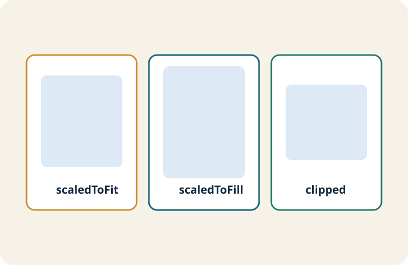

Imageの表示品質を安定させる
Imageは `scaledToFit` と `scaledToFill` の違いを理解するだけで、レイアウト崩れの多くを防げます。 このページでは、frameとclippedの関係までを整理します。
1. 基本文法（最小コード）
Basic最小形は以下です。`resizable()` を付けるとサイズ変更が可能になります。
Image("profile-photo")
.resizable()
.scaledToFit()
2. 完成コード例（初心者向け）
Code LabBasic: アバター画像を表示
Image("avatar")
.resizable()
.scaledToFill()
.frame(width: 88, height: 88)
.clipShape(Circle())
.overlay(Circle().stroke(.white, lineWidth: 3))Intermediate: 画像カードを再利用可能にする
Image(thumbnail)
.resizable()
.scaledToFill()
.frame(maxWidth: .infinity, minHeight: 180, maxHeight: 220)
.clipped()
.overlay(alignment: .bottomLeading) {
Text(category)
.font(.caption.bold())
.padding(.horizontal, 8)
.padding(.vertical, 4)
.background(.black.opacity(0.55), in: Capsule())
.foregroundStyle(.white)
.padding(10)
}
.clipShape(RoundedRectangle(cornerRadius: 14))3. 発展コードの読み方（中級入口）
ポイントframeの最小/最大指定
複数端末で比率を保ちつつ、極端な縦長表示を抑えられます。
overlayの併用
画像上にカテゴリなどの補助情報を重ね、情報密度を上げられます。
4. つまずきやすいポイント
アンチパターン- `scaledToFill` だけ使って `clipped()` を忘れ、はみ出してしまう。
- 画像ごとに固定width/heightをベタ書きし、再利用しにくくなる。
- 透過オーバーレイのコントラスト不足で文字が読めなくなる。
5. まとめチェックリスト
確認- fit/fillの違いを説明できる。
- frameとclippedの併用理由を理解している。
- Image + overlayでカードUIを作れる。